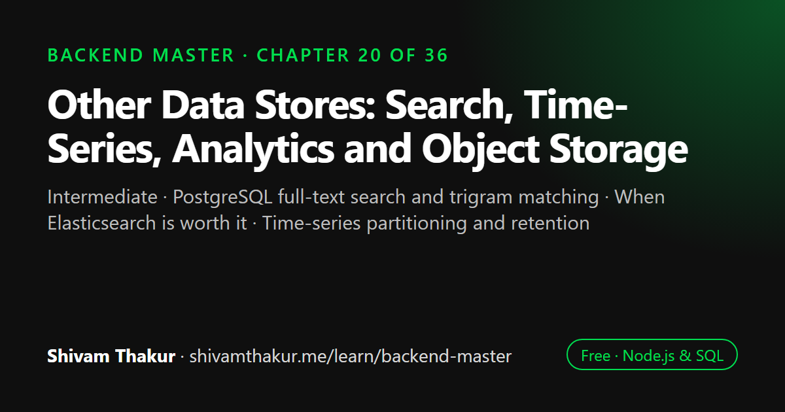

Chapter 20 of 36 · Intermediate
Other Data Stores: Search, Time-Series, Analytics and Object Storage
Other Data Stores and Choosing the Right One — Search, Analytics, Time-Series, Files

Every extra data store is a copy that must be kept in sync. This chapter measures PostgreSQL full-text search against ILIKE, tries Elasticsearch, shows partitioning and columnar analytics with DuckDB, explains object storage and presigned uploads, and gives a framework for deciding when PostgreSQL is enough.
In this chapter you will learn
- PostgreSQL full-text search and trigram matching
- When Elasticsearch is worth it
- Time-series partitioning and retention
- Columnar analytics and Parquet
- Polyglot persistence and the dual-write problem
20.0 Why This Chapter Matters
You now know a relational database (PostgreSQL), a document database (MongoDB) and an in-memory store (Redis). Real systems also need things none of those do well:
- "Search as you type, with typos, ranked by relevance" (the box at the top of every shop).
- Dashboards over hundreds of millions of rows that would take a row-store minutes.
- Billions of timestamped events that must be queried recently and deleted when old.
- Photos, invoices and videos, which don't belong inside a database at all.
- Relationships of relationships ("friends of friends who bought this").
Each has a specialist tool, and each specialist tool brings the same hidden cost: a second copy of your data that can disagree with the first. This chapter surveys the main categories, runs the ones we can run locally, and ends with the decision framework that matters most:
Start with PostgreSQL. Add a specialist only when you can name the specific limit you hit, and plan how it stays in sync.
We test on real engines: PostgreSQL 17 full-text search and partitioning, Elasticsearch 8.15.0, and DuckDB (columnar analytics) via the @duckdb/node-api package.
20.1 Pick by Access Pattern, Not by Hype
The first question is never "which database?" It is "how will this data be read and written?"
| Access pattern | Needs | Typical tool |
|---|---|---|
| Transactions on related entities; integrity | ACID, constraints, joins | PostgreSQL (Ch 12–16) |
| Self-contained documents with flexible shape | Nested data, sharding | MongoDB (Ch 18) |
| Sub-millisecond lookups, counters, queues, caches | RAM speed | Redis (Ch 19) |
| Text search, relevance, typo tolerance, facets | Inverted index, analyzers | PostgreSQL FTS / Elasticsearch / OpenSearch / Typesense / Meilisearch |
| Large scans and aggregations (analytics, BI) | Columnar storage | DuckDB / ClickHouse / BigQuery / Snowflake / Redshift |
| Time-series (metrics, events, IoT) | Append-heavy, time-range queries, retention | PostgreSQL partitions / TimescaleDB / InfluxDB / ClickHouse |
| Graphs (deep relationship traversal) | Pointer-chasing | Neo4j / recursive SQL (Ch 13) |
| Large binary files | Cheap, durable blobs, CDN | Object storage (S3, GCS, R2, MinIO) |
| Ordered, replayable event log | Durable log, consumer offsets | Kafka / Redpanda / streams (Ch 28) |
Also ask: how big? (a table of 1 M rows is tiny; PostgreSQL handles 1 B rows with partitioning), how fresh? (is 5-minute-old data acceptable?), who queries it? (the app? analysts?), and what happens if it's wrong or lost?
The hidden tax of every extra store
Each additional data store means:
- A sync pipeline from the source of truth (and its failures, lag, and backfills).
- Another thing to run, monitor, secure, back up, upgrade, and be paged for.
- Another failure mode in every request that touches it.
- Another skill the team must have.
A common and expensive mistake is adopting Elasticsearch, Kafka and a graph database for a system whose data would fit comfortably in one PostgreSQL instance. PostgreSQL's ecosystem (full-text search,
jsonb, partitioning,LISTEN/NOTIFY, recursive CTEs, extensions) covers a surprising amount.
20.2 Search
20.2.1 Why LIKE '%word%' isn't search
Test dataset: 300,000 product reviews (12–19 words each; 42 MB), with the word "waterproof" planted in 300 of them.
EXPLAIN (ANALYZE) SELECT id FROM reviews WHERE body ILIKE '%waterproof%';
-- Seq Scan on reviews (actual rows=300) Rows Removed by Filter: 299700 Execution Time: 910.576 msIt reads every row, can't use an ordinary index, doesn't know that "leaks", "leaking" and "leaked" are the same idea, and can't rank results. A search engine solves four problems: speed (inverted index), linguistics (stemming, stop-words), ranking (best matches first), and forgiveness (typos, synonyms).
20.2.2 PostgreSQL full-text search (FTS): often enough
PostgreSQL has a built-in search engine: tsvector (a document reduced to normalised words) and tsquery, indexed with GIN (Chapter 15).
ALTER TABLE reviews ADD COLUMN tsv tsvector GENERATED ALWAYS AS (to_tsvector('english', body)) STORED;
CREATE INDEX reviews_tsv_idx ON reviews USING gin (tsv);
SELECT id FROM reviews WHERE tsv @@ to_tsquery('english', 'waterproof');gin_size: 4464 kB
Bitmap Heap Scan on reviews (actual rows=300) Heap Blocks: exact=17
Execution Time: 3.048 ms ← from 910 ms910 ms → 3 ms (≈300×) for the same 300 hits, with a 4.4 MB index. Using a generated column (Chapter 14) means the vector can never drift from the text; the database maintains it.
What the normalisation does:
SELECT to_tsvector('english', 'The pens were leaking and the notebooks leaked');
-- 'leak':4,8 'notebook':7 'pen':2Stop words ("the", "were", "and") vanished; "pens" → pen, "notebooks" → notebook; "leaking" and "leaked" both → leak (with their positions). That's stemming.
Web-search-style queries (websearch_to_tsquery accepts quotes and -):
stem_leak = 125331 (query "leak")
leaking_pen_not_refund = 30856 (query: leaking pen -refund)
phrase_fast_shipping = 4965 (query: "fast shipping")Ranking with ts_rank:
SELECT id, ts_rank(tsv, q) AS rank, left(body, 70) FROM reviews, websearch_to_tsquery('english', 'waterproof notebook') q
WHERE tsv @@ q ORDER BY rank DESC LIMIT 3;
-- 258007 | 0.1780 | color pen zipper waste fast paper ...What PostgreSQL FTS does not do (well)
Typos. A query for waterprof:
fts_typo = 0 ← zero matchesFor fuzzy matching, add the trigram extension (Chapter 15), which compares letter triples:
SELECT word, similarity(word, 'waterprof') FROM words WHERE word % 'waterprof' ORDER BY 2 DESC LIMIT 3;
-- waterproof | 0.75A common approach: use trigram similarity against a dictionary of words to suggest a correction, then run the FTS query. Other gaps: advanced relevance tuning (BM25, boosting, synonyms), "did you mean", facet counts at scale, and distributed search across many nodes.
20.2.3 Elasticsearch / OpenSearch: the dedicated engine
We ran Elasticsearch 8.15.0 as a single node (security disabled, local test only), indexed 100,000 of those reviews with the english analyzer, and searched:
bulk indexed 100000 docs in 10.1 s
searchable immediately? 80000 (of 100000) ← near-real-time
after _refresh: 100000
index size: 9.1 MB
match waterproof hits= 100 took(server)= 144 ms (first query, cold)
fuzzy: "waterprof" (typo) hits= 100 took(server)= 49 ms
phrase "fast shipping" hits= 1659
bool: leaking pen NOT refund hits= 10000 (capped: default total-hit counting stops at 10,000)
highlight + rank top hit score 7.46 | highlight: "durable paper [notebook] pen quality broke ..."
aggregation top products mentioning refund: 3176:18, 3471:17, 1568:16Observe:
- Fuzzy search works out of the box (
fuzziness: 'AUTO'found the 100 "waterproof" documents from "waterprof"), where PostgreSQL FTS returned zero. - Highlighting returns snippets with matches wrapped, and aggregations give facet counts (top products mentioning "refund"), the shop's "filter by brand/price/rating" sidebar.
- Near-real-time, not real-time: immediately after bulk loading, only 80,000 of 100,000 documents were searchable; after a
refresh(by default every ~1 s) all were. A just-written document may not appear in search for about a second. - Timings above were measured on a laptop in Docker on the first queries, so they're not a benchmark. Both engines answered in milliseconds; the choice is about features and operations, not speed on a small dataset.
The critical lesson: Elasticsearch is a copy. I changed a review in PostgreSQL:
after UPDATE in PostgreSQL, ES finds "brandnewword": 0 <- search index is a COPY that must be syncedNothing told Elasticsearch. You need a sync mechanism (§20.8), and you must handle its failure modes: lag, missed events, full re-index (rebuilding 100k documents took 10 s here; 100M takes hours).
PostgreSQL FTS vs Elasticsearch
| PostgreSQL FTS (+ trigram) | Elasticsearch / OpenSearch | |
|---|---|---|
| Setup | Already there | A cluster to run (Java, memory-hungry) |
| Consistency with your data | Transactional: the index is updated with the row | Eventual; needs sync |
| Typo tolerance | Via pg_trgm (extra work) |
Built in |
| Relevance tuning, synonyms, boosting | Limited | Rich (BM25, analyzers, function score) |
| Facets/aggregations | SQL GROUP BY |
Native, fast at scale |
| Scale | One node (millions of docs: fine) | Distributed shards (billions) |
| Best for | Simple/medium search inside an app | Search-centric products, big corpora, logs |
Rule of thumb: start with PostgreSQL FTS; move to a search engine when you need fuzziness, relevance tuning, facets over big data, or scale that PostgreSQL can't give. Lighter dedicated engines (Typesense, Meilisearch) offer typo-tolerant search with far less operational weight (not run here).
20.3 Time-Series and Partitioning
Time-series data (events, metrics, logs, sensor readings) is append-heavy, queried by time range, and expires (you keep 90 days). General-purpose B-tree tables handle it poorly at scale: huge indexes, deletes that leave bloat (Ch 12). The tool in PostgreSQL itself is declarative partitioning: one logical table, physically split into child tables by range.
CREATE TABLE ev (id bigint GENERATED ALWAYS AS IDENTITY, at timestamptz NOT NULL, user_id int, kind text,
PRIMARY KEY (id, at)) PARTITION BY RANGE (at);
CREATE TABLE ev_2025_03 PARTITION OF ev FOR VALUES FROM ('2025-03-01') TO ('2025-04-01'); -- one per month (12 created)
INSERT INTO ev (at, user_id, kind) SELECT … FROM generate_series(1, 2000000) g; -- 2,000,000 rows(The primary key must include the partition column: a rule worth remembering.) Rows distributed: ev_2025_01 178,559, ev_2025_02 161,280, ev_2025_03 178,560…
Partition pruning
EXPLAIN (ANALYZE) SELECT count(*) FROM ev WHERE at >= '2025-03-10' AND at < '2025-03-11';
-- Aggregate
-- -> Index Only Scan using ev_2025_03_at_idx on ev_2025_03 ev (actual rows=5760) Execution Time: 9.978 msThe plan touches only ev_2025_03; the other eleven partitions are never opened ("pruned"). For this one-day query on a 2M-row table a plain index would also be fast, so pruning isn't the headline benefit at this size. It matters when tables reach billions of rows and indexes no longer fit in memory.
Retention: dropping old data
The main operational win. I compared removing January (about 178,000 rows) from an equivalent unpartitioned copy and from the partitioned table:
DELETE FROM ev_flat WHERE at < '2025-02-01'; 1031 ms
ALTER TABLE ev DETACH PARTITION ev_2025_01; 792 ms
DROP TABLE ev_2025_01; 306 msAn honest result: at this size, DETACH + DROP (≈1.1 s combined) was not faster than the DELETE (1.0 s) in my run, which surprised me (I expected DETACH to be near-instant; it can be slower on busy systems because it takes locks and DETACH ... CONCURRENTLY exists for that). The real advantages are structural, and I did not measure them here: DROP returns disk space immediately and creates no dead rows for VACUUM to clean (a big DELETE leaves dead tuples and a table file that doesn't shrink; the unpartitioned table file was still 111 MB for 1.82M remaining rows), and it scales as a metadata operation instead of per-row work. Partition-by-time is the standard design for log/event tables, with a job that creates next month's partition ahead of time and drops the oldest.
Specialised time-series databases (TimescaleDB = PostgreSQL extension with automatic partitioning and compression; InfluxDB; ClickHouse; Prometheus for metrics) add compression, continuous aggregates, and downsampling. (Not run here.) For many apps, partitioned PostgreSQL + a BRIN index (Chapter 15: 24 kB vs 21 MB) is plenty.
20.4 Columnar and Analytical Stores (OLAP)
OLTP (what we've done): many small transactions touching a few rows each, stored row by row. OLAP (analytics): few queries scanning millions of rows but only a few columns ("average order value by status"). A columnar store keeps each column together: scanning one column reads only that column, it compresses extremely well (same-typed values), and it processes data in vectorised batches.
We exported the 1,000,000 orders from Chapter 15 to CSV (53.2 MB) and ran the same aggregation in PostgreSQL and in DuckDB, an embedded analytical database (think "SQLite for analytics", runs inside your Node process):
SELECT status, count(*), avg(total_minor)::int, sum(total_minor) FROM orders GROUP BY status ORDER BY 2 DESC;PostgreSQL (row store, 1 worker) 393 ms
DuckDB: query the CSV directly 686 ms (parses the text each time)
DuckDB: in-memory table (columnar) 78 ms
DuckDB: query the Parquet file 52 msAll four returned identical numbers (delivered 799588 …). The columnar form was 5–7× faster than PostgreSQL even though PostgreSQL was already doing a simple scan, and the Parquet file (an open columnar file format) was 19.2 MB vs 53.2 MB CSV (2.8× smaller). (PostgreSQL here used one worker; with parallel query its gap narrows, and on much bigger data the columnar advantage grows.)
What this means in practice:
- Don't run heavy BI dashboards against your production OLTP database: they compete with your orders. Copy data (nightly or via CDC) to an analytical store.
- Parquet files on object storage + DuckDB/ClickHouse/Athena is a cheap, powerful analytics stack.
- Managed warehouses: BigQuery, Snowflake, Redshift; open-source: ClickHouse. (Described, not run.) They use the same columnar idea at cluster scale.
- This split is the OLTP/OLAP separation; the pipeline that feeds the warehouse is ELT/ETL.
20.5 Graph Databases (Orientation)
A graph database (Neo4j, Amazon Neptune) stores nodes and relationships as first-class data and is optimised for deep traversals: "friends of friends", recommendation paths, fraud rings, dependency graphs. In SQL, each extra hop is another join; in a graph database, following a relationship is a pointer lookup.
But recall Chapter 13's recursive CTE: PostgreSQL can walk trees and graphs up to a decent depth (our category tree). The honest guidance: use a recursive CTE for hierarchies and 2–4 hops; consider a graph database when relationship depth and traversal speed are the core of the product (recommendation engines, social graphs, knowledge graphs). (Neo4j and Cypher were not run here.)
20.6 Object Storage and File Uploads
Never store large files in your database (it bloats backups, kills caching, and a DB connection is an expensive way to stream a video). Store files in object storage (Amazon S3, Google Cloud Storage, Cloudflare R2, MinIO for self-hosting), and keep only metadata in your database:
CREATE TABLE product_images (
id bigint GENERATED ALWAYS AS IDENTITY PRIMARY KEY,
product_id bigint NOT NULL REFERENCES products(id),
object_key text NOT NULL UNIQUE, -- 'products/42/9f8a-front.webp'
content_type text NOT NULL, bytes int NOT NULL, created_at timestamptz NOT NULL DEFAULT now()
);Object storage is a flat key → blob store with HTTP access, huge durability (11 nines on S3), and cheap capacity. Key patterns:
Presigned URLs: let the browser upload directly
Streaming a 50 MB upload through your Node server wastes your bandwidth and a worker. Instead:
1. Browser → API: "I want to upload front.webp (image/webp, 800 KB)"
2. API validates (auth, type, size limit), makes an object key, and signs a time-limited URL
3. API → Browser: { uploadUrl: "https://bucket.s3…/products/42/9f8a-front.webp?X-Amz-Signature=…", key }
4. Browser → S3: PUT the file straight to storage (your server never sees the bytes)
5. Browser → API: "done, key = …" → API verifies the object exists, then saves the metadata rowReads are the same idea: public files behind a CDN, private files via short-lived presigned GET URLs. For files over ~100 MB use multipart upload. Validate content type and size server-side when signing, scan uploads if users share them, never trust the client's filename, and set lifecycle rules to expire temp objects.
(This section is conceptual. I attempted to run MinIO for a hands-on test but its image could not be pulled in my environment, so I have not executed presigned URLs or multipart uploads here. Chapter 7's multer covers server-side uploads that go through your API.)
20.7 Message Logs (Kafka and Friends): Orientation
Kafka (and Redpanda, Pulsar) is a distributed, durable, partitioned log. Producers append events; consumers track their own offsets and can replay history. It's the backbone of event-driven systems and data pipelines at scale. Compare with what you've met:
| Redis streams (Ch 19) | PostgreSQL SKIP LOCKED queue (Ch 16) |
RabbitMQ / SQS | Kafka | |
|---|---|---|---|---|
| Model | Log + consumer groups | Table as queue | Broker queues, routing | Partitioned replayable log |
| Replay old events | Yes (within retention) | Only if you keep rows | Usually no | Yes, core feature |
| Throughput | High | Moderate | High | Very high |
| Operational weight | Low | None (it's your DB) | Medium | High |
Chapter 28 compares them properly. The principle holds: start with the simplest (PostgreSQL table or Redis stream) and graduate when you hit a measured limit.
20.8 Polyglot Persistence and the Sync Problem
Using several stores for their strengths is polyglot persistence. The discipline is to name, for every piece of data:
Which store is the source of truth? Which stores hold derived copies? How do copies get updated, and what happens when that fails?
The dual-write trap
The naive approach: in the request handler, write PostgreSQL, then write Elasticsearch.
await db.updateProduct(...); // ✔ committed
await search.indexProduct(...); // ✘ network error / crash → the search index is now permanently wrongThere is no transaction spanning both. If the second call fails, the stores silently disagree, and nobody is alerted. Our Elasticsearch test showed the base case: with no sync, a change in PostgreSQL was invisible to search.
Reliable patterns
| Pattern | Idea | Trade-off |
|---|---|---|
| Outbox (Chapters 16, 28, 29) | In the same DB transaction as the change, insert an event row; a worker publishes/indexes it afterwards, retrying until success | Needs a worker; at-least-once → idempotent consumers |
| CDC (change data capture, e.g., Debezium) | Read the database's write-ahead log and stream changes to other systems | Infrastructure heavy; very robust |
| Periodic re-index / reconcile | A job compares source and copy, fixing differences | Simple safety net; use in addition to the above |
| Dual-write (don't) | Both writes in the handler | Drifts; only acceptable for disposable caches |
Always build the full rebuild path ("re-index everything from PostgreSQL"), because eventually you will need it, and test it. Treat derived stores as disposable, as in Chapter 19's cache.
ShopLine's data architecture
| Data | Store | Why | Fed by |
|---|---|---|---|
| Users, orders, payments, stock | PostgreSQL (source of truth) | Integrity, transactions | App |
| Product search | PostgreSQL FTS first → Elasticsearch/Typesense if needed | Typos, facets | Outbox → indexer; nightly reconcile |
| Product catalogue with variable attributes | jsonb column (or MongoDB if it outgrows that) |
Flexible attrs | App |
| Sessions, rate limits, caches, best-seller ranking | Redis | Speed, TTL | App (disposable) |
| Product images, invoices | Object storage + CDN | Cheap, durable | Presigned uploads |
| Analytics/BI | Parquet + DuckDB/ClickHouse/warehouse | Columnar scans | Nightly export / CDC |
| Event/audit log | Partitioned PostgreSQL table (or Kafka at scale) | Retention by dropping partitions | App / outbox |
Five engines is the ceiling, not the starting point. A real early-stage ShopLine launches with PostgreSQL + Redis + object storage and adds the rest when a measured need appears.
20.9 A Decision Framework
Ask in order:
- Can PostgreSQL do it acceptably? (FTS,
jsonb, partitioning, queues, recursive CTEs, extensions.) If yes, stop. - What specific limit am I hitting? (Latency? Feature? Scale? Cost?) Measure it, with data and
EXPLAIN. - Which tool addresses exactly that limit? (Use the table in §20.1.)
- How will the copy stay in sync, and what if it's wrong or down? (Outbox/CDC, rebuild path, degraded mode.)
- Who runs it? (Managed service vs self-host; on-call burden.)
- Can we leave? (Open formats and protocols reduce lock-in: Parquet, SQL, S3 API, OpenSearch-compatible APIs.)
20.10 Edge Cases and Gotchas Checklist
- Adopting a specialist store before PostgreSQL's limit was measured.
- Dual writes to two stores with no outbox/CDC.
- No rebuild path for a derived store (search index, cache, warehouse).
- Treating a derived copy as a source of truth.
- Running analytics/BI on the production OLTP database.
-
LIKE '%x%'as "search"; FTS without a GIN index or generated column. - Expecting FTS to handle typos; expecting Elasticsearch results instantly after a write.
- Elasticsearch with security disabled, exposed to a network.
- Unbounded time-series tables; retention via giant
DELETEs instead of dropping partitions. - Partitioned table primary key missing the partition column; forgetting to pre-create future partitions.
- Large files inside the database; uploads streamed through the API server.
- Trusting client-supplied file names/types; no size limits on presigned uploads.
- Choosing Kafka (or any heavyweight) for a small, simple queue.
- Not defining who is the source of truth for each datum.
20.11 Chapter Summary
- Pick by access pattern. Every extra store costs a sync pipeline, operations and failure modes. Start with PostgreSQL; add a specialist for a named, measured limit.
- Search:
ILIKE '%x%'took 910 ms (seq scan); PostgreSQL FTS with a generatedtsvector+ GIN took 3 ms, with stemming, stop-words, phrases, negation and ranking, but no typo tolerance (0 hits for "waterprof"). Elasticsearch gave fuzzy matching, highlights and facets, is near-real-time (80,000/100,000 visible before refresh), and is a copy that went stale after a PostgreSQL update. - Time-series: declarative partitioning prunes to one partition; dropping partitions avoids dead rows/bloat (in my run
DETACH+DROPwas not faster thanDELETEat 178k rows, so the benefit is structural). Specialised engines (Timescale, ClickHouse) add compression and rollups (not run). - Analytics: a columnar engine (DuckDB) ran the aggregation in 52–78 ms vs PostgreSQL's 393 ms, and Parquet was 2.8× smaller than CSV. Keep BI off the OLTP database.
- Files: object storage + metadata rows + presigned URLs (concept; not run).
- Polyglot persistence needs a source of truth, a sync mechanism (outbox/CDC, not dual writes), reconciliation, and a rebuild path.
20.12 Revision Notes
- Access pattern first; PostgreSQL first; name the limit before adding a store.
- FTS:
tsvector(generated column) + GIN +websearch_to_tsquery+ts_rank; typos needpg_trgm. - ES: analyzers, fuzzy, highlight, aggs; near-real-time (refresh ≈ 1 s); a COPY needing sync.
- Partition by time; PK includes partition key; pre-create partitions; drop to expire.
- OLAP = columnar (DuckDB/ClickHouse/warehouse) + Parquet; not on the OLTP primary.
- Files in object storage, metadata in DB, presigned URLs, CDN.
- Sync via outbox/CDC + reconcile + rebuild; never rely on dual writes.
20.13 Mind Map (ASCII)
CHOOSING DATA STORES
│
┌────────┬────────┬────────┼─────────┬──────────┬───────────┐
SEARCH TIME-SERIES OLAP GRAPH FILES LOG/QUEUE SYNC
│ │ │ │ │ │ │
PG FTS partitions columnar recursive object Kafka/ outbox
trigram retention DuckDB CTE ≤ few storage Redis CDC
Elastic BRIN Parquet Neo4j presigned streams reconcile
(copy!) Timescale warehouse URLs + CDN rebuild path20.14 Cheat Sheet
-- FTS
ALTER TABLE t ADD COLUMN tsv tsvector GENERATED ALWAYS AS (to_tsvector('english', body)) STORED;
CREATE INDEX ON t USING gin (tsv);
SELECT … FROM t, websearch_to_tsquery('english', $1) q WHERE tsv @@ q ORDER BY ts_rank(tsv, q) DESC;
-- fuzzy: CREATE INDEX ON words USING gin (word gin_trgm_ops); WHERE word % 'typo'
-- partitioning
CREATE TABLE ev (…, PRIMARY KEY (id, at)) PARTITION BY RANGE (at);
CREATE TABLE ev_2026_11 PARTITION OF ev FOR VALUES FROM ('2026-11-01') TO ('2026-12-01');
ALTER TABLE ev DETACH PARTITION ev_2026_01; DROP TABLE ev_2026_01;// Elasticsearch: PUT /idx {mappings}; POST /idx/_bulk (NDJSON); POST /idx/_refresh;
// POST /idx/_search { query:{ match:{ body:{ query:'waterprof', fuzziness:'AUTO' } } }, highlight:{…}, aggs:{…} }
// DuckDB: SELECT … FROM read_parquet('orders.parquet') GROUP BY …20.15 Key Takeaways
- PostgreSQL first. It covers more than people expect (FTS, jsonb, partitions, queues).
- Every extra store is a copy with sync, ops and failure costs; name the limit that justifies it.
- Search engines are copies: use outbox/CDC + reconcile + a rebuild path, never bare dual writes.
- Analytics belongs on columnar storage, away from your OLTP database.
- Files go in object storage; the database holds metadata; browsers upload via presigned URLs.
20.16 20 Multiple Choice Questions
Tap an answer to check it. Your score updates as you go.
Score: 0 / 0 answered (20 questions)
Why was
ILIKE '%waterproof%'slow?A generated
tsvectorcolumn is preferred because:What did PostgreSQL FTS return for the typo
waterprof?Stemming means:
Elasticsearch right after bulk indexing returned 80,000 of 100,000 docs because it is:
The biggest operational risk of adding Elasticsearch is:
Which is a reliable way to keep a search index in sync?
In partitioned
ev, the primary key must include:Partition pruning means:
In my retention test at 178k rows,
DETACH+DROPvsDELETE:A columnar store speeds analytics because:
DuckDB's Parquet file was roughly how much smaller than the CSV?
Why avoid running heavy dashboards on the production OLTP database?
Files like product images belong in:
Presigned upload URLs let:
A graph database shines when:
Kafka differs from a simple queue because:
The "dual-write trap" is:
Before adding a new data store you should:
Which statement about ShopLine's launch architecture is most sensible?
Show the answer key
1-b, 2-b, 3-b, 4-b, 5-b, 6-b, 7-b, 8-b, 9-b, 10-b, 11-b, 12-b, 13-b, 14-b, 15-a, 16-b, 17-b, 18-b, 19-b, 20-b
20.17 20 Hands-on Exercises
(See resources/ch20/README.txt.)
Easy
- Reproduce the
ILIKEvs GIN full-text comparison on your own text column. - Show stemming with
to_tsvectoron three sentences. - Use
websearch_to_tsquerywith a phrase and a negation. - Rank results with
ts_rankand explain the order of the top 3. - Create a monthly partitioned table and prove pruning with
EXPLAIN.
Medium
- Add trigram similarity to suggest corrections for typos; combine with FTS.
- Index 100k documents into Elasticsearch; compare fuzzy search with your PostgreSQL approach.
- Demonstrate the near-real-time gap (count before/after
_refresh). - Write a script that detects drift between PostgreSQL and Elasticsearch (compare ids and
updated_at). - Automate monthly partition creation and old-partition dropping with a script.
- Export a table to Parquet and run the same aggregation in PostgreSQL and DuckDB; record sizes and times.
- Design the metadata table and key naming scheme for product images in object storage.
Hard
- Implement an outbox table and an indexer worker (using
SKIP LOCKED) that keeps Elasticsearch in sync; kill the worker mid-run and prove no updates are lost. - Implement a full re-index with zero downtime using an alias swap in Elasticsearch.
- Measure
DETACH PARTITION CONCURRENTLYvsDELETEunder concurrent writes at 20M rows. - Compare BRIN vs B-tree vs partitioning for a 50M-row event table.
- Build presigned upload flow against MinIO or an S3-compatible service; test oversize and wrong-type rejection.
- Benchmark PostgreSQL parallel query vs DuckDB on a 50M-row aggregation; explain the gap.
- Implement CDC-style sync using PostgreSQL logical decoding (
wal2json/pgoutput) into a search index. - Write a design doc choosing stores for a ride-sharing app (geo, trips, payments, chat, analytics), justifying each store and its sync.
20.18 5 Interview Questions
1. How would you add search to an existing PostgreSQL-backed app?
Model answer: Start with PostgreSQL FTS: a generated tsvector column with a GIN index, websearch_to_tsquery, ts_rank, plus pg_trgm for typos. It's transactional and has no sync problem. If requirements outgrow it (fuzziness, relevance tuning, facets at scale), introduce Elasticsearch/Typesense fed by an outbox or CDC with a reconcile job and a full-rebuild path, accepting near-real-time freshness.
2. What is the dual-write problem? Model answer: Updating two systems (DB and search index) from application code without a shared transaction; if the second fails, they diverge silently. Solutions: outbox pattern (write the event in the same DB transaction, publish asynchronously, idempotent consumers), CDC from the WAL, plus periodic reconciliation.
3. Why are analytical queries slow on a row-store and what do you do about it? Model answer: Row stores read whole rows even when a query needs two columns, and don't compress or vectorise as well. Copy data to a columnar engine (ClickHouse, BigQuery, DuckDB over Parquet); keep BI off the OLTP primary. In my test the columnar engine took 52–78 ms vs 393 ms in PostgreSQL for a 1M-row aggregation.
4. How would you store and serve user-uploaded images? Model answer: Object storage (S3-compatible) with metadata in the DB; the API authenticates and validates, returns a short-lived presigned PUT URL so the browser uploads directly; the API then confirms the object and records it. Serve via CDN; derive thumbnails asynchronously; lifecycle rules for temp objects; validate type/size and never trust filenames.
5. How do you manage retention for a billion-row events table?
Model answer: Partition by time (range), pre-create future partitions, use BRIN or small per-partition indexes, and drop/detach old partitions instead of mass DELETEs (no bloat, immediate space return). Consider compression/rollups (TimescaleDB, ClickHouse) and archive old partitions to Parquet in object storage.
20.19 3 Real Projects
Project 1: Search Upgrade Path (intermediate, ~10 hours). Build ShopLine product search three ways (PostgreSQL FTS+trigram, Elasticsearch/Typesense via outbox, and a hybrid), with relevance test sets (precision@k), typo and synonym handling, latency benchmarks, and an operations comparison.
Project 2: Analytics Pipeline (intermediate, ~10 hours). Nightly export of ShopLine orders to Parquet (partitioned by date), a DuckDB/ClickHouse query layer, five business dashboards, and reconciliation checks proving totals match PostgreSQL.
Project 3: Media Service (intermediate–advanced, ~12 hours). Presigned-upload service with MinIO/S3, content validation, async thumbnailing via a queue, signed private downloads, CDN-friendly cache headers, and cleanup of orphaned objects.
20.20 Further Reading
- PostgreSQL docs: Full Text Search, Table Partitioning,
pg_trgm. - Elasticsearch / OpenSearch guides: analyzers, mapping, relevance (BM25), near-real-time search.
- DuckDB documentation; the Apache Parquet format; Designing Data-Intensive Applications Chapter 3 (storage engines, column stores) and Chapter 11 (derived data, CDC).
- Chris Richardson's Transactional Outbox pattern; Debezium documentation.
- AWS S3 docs: presigned URLs and multipart upload; the "Use cases for object storage" guides.
- Database Internals (Petrov) for how these engines work underneath.
Up next → Chapter 21: Authentication (Part 4: Security, Testing and Reliability)
Part 3 (data) is complete. Part 4 begins with the question every backend answers first: who are you? Password hashing (and why not SHA-256), sessions vs JWTs, refresh-token rotation, OAuth2/OIDC, MFA and the attacks to defend against, all implemented and attacked for real.
Search, OLAP, Time-Series: frequently asked questions
Do I need Elasticsearch for search?
Often not. PostgreSQL full-text search took a 300,000-row query from 910 ms to 3 ms. Elasticsearch adds typo tolerance, relevance tuning and facets at scale, but is a copy that needs syncing.
What is the dual-write problem?
Updating the database and a second system in two steps with no shared transaction, so a failure between them leaves them inconsistent. Use an outbox or change data capture.
Why use columnar storage for analytics?
Analytical queries read a few columns of many rows. Columnar engines read only those columns and compress well; DuckDB ran our aggregation several times faster than PostgreSQL.
Where should uploaded files be stored?
In object storage such as S3, with metadata in the database. Let browsers upload directly using short-lived presigned URLs.